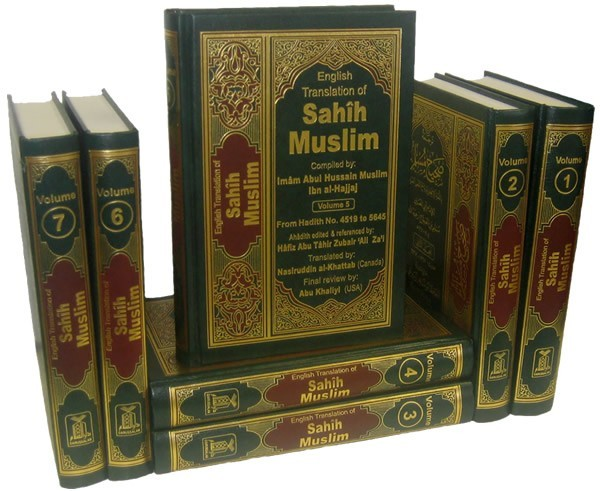

35:30 · 2 OPERE
Debunking myths about the "Palestinians." A beam of truth in a sea of lies.
Il filo del discorso
Un relatore che racconta di essere nato nel 1978 e di avere un padre fra i fondatori di Hamas interviene sulla guerra in Medio Oriente rivolgendosi a un pubblico di rappresentanti politici. Esordisce lamentando le assenze e accusando finanziamenti esteri e istituzioni occidentali di alimentare dirigenti e gruppi violenti. Presenta la propria esperienza d’infanzia come ragione per ascoltare chi è cresciuto nel conflitto.
Leggi la sintesi completaRiduci la sintesi
Il nome del relatore non è pronunciato nella fonte disponibile e non viene dedotto dalla sola biografia. Il discorso contesta poi radicalmente l’identità nazionale palestinese, che il relatore descrive come un’appartenenza politica imposta, e propone una lettura del conflitto dominata dalla religione. Richiama Corano e hadith, attribuendo all’Islam un progetto ostile agli ebrei; attacca inoltre Yasser Arafat per l’uso politico dei bambini, il potere personale e la gestione dei finanziamenti. Queste sono le sue accuse e interpretazioni: la testimonianza personale non dimostra l’inesistenza di un popolo, una responsabilità collettiva dei palestinesi o una disposizione alla violenza di tutti i musulmani. Le note chiariscono i limiti storici, testuali e giuridici delle affermazioni. Il relatore pone al centro la liberazione degli ostaggi e la protezione dei bambini, contrapponendo questi obiettivi alla mobilitazione per uno Stato palestinese. Nega che l’assenza, a suo avviso, di una precedente nazione possa lasciare spazio alla nozione di occupazione. Qualifica il 7 ottobre come genocidio e respinge la stessa qualificazione per Gaza, sostenendo che gli avvertimenti israeliani e l’uso dei civili da parte di Hamas renderebbero evidente una diversa intenzione. Contesta anche le cifre diffuse sulle vittime. La scheda conserva questi passaggi come posizioni del relatore e distingue le definizioni giuridiche dalle conclusioni che egli ne trae: non certifica né assolve crimini sulla base del numero di morti, degli avvertimenti o dell’identità delle parti. Nella parte finale l’intervento si sposta sull’Europa. Il relatore lega diritti e responsabilità, critica il ruolo politico delle moschee e propone di restringere il culto alla dimensione privata. Parla delle donne, della repressione e del rapporto fra autorità civile e religiosa, con generalizzazioni che non sono assunte come descrizioni scientifiche o norme vigenti. Conclude evocando per la Cisgiordania un modello simile al Vaticano e chiedendo che gli aiuti siano condizionati e rivolti direttamente a istruzione ed economia, anziché a dirigenti che giudica corrotti. Rifiuta nel prossimo futuro la formazione di uno Stato palestinese e invita a non imporre a Israele rinunce alla sicurezza. È una proposta politica del relatore, non una soluzione giuridica già acquisita.
I libri nel discorso

Corano
Note sul riferimento
Copertina: BUR Classici, edizione aggiornata
Edizione con introduzione, traduzione e commento di Alessandro Bausani, a cura di Layla Mustapha Ammar. Anno della ristampa non dedotto dalla copertina; nessuna edizione attribuita al video.
Riferimento ricavato dalla trascrizione automatica.

Ṣaḥīḥ Muslim
Identificazione probabile
Note sul riferimento
Fotografia dell’edizione completa in sette volumi: Dar-us-Salam · sette volumi arabo-inglesi · 2007 · traduzione di Nasiruddin al-Khattab
Fotografia editoriale autentica della raccolta completa in sette volumi. Non è una singola copertina né prova che questa sia l’edizione impiegata nel filmato. L’ISBN si riferisce all’insieme.
Riferimento ricavato dalla trascrizione automatica.